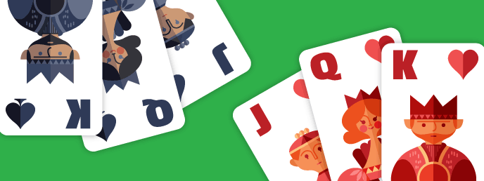

To be honest, the concept of this seemed really tough at first. After a while of playing throuh some of the schematics, I got the hang of how to utilize the variables and programs. I tried to base the game off of a legend of zelda theme. My partner, Kamryn Areguin, helped come up with the concepts and she also was a big help with the backlog. Our backlog can be found below.
BacklogAt first, I didn't know what I wanted to do the project on; thus, I decided to do the project on the subject that was most interesting at the time, which happened to be U.S. History. The story is based on the California Gold Rush and how a city could have been made during the time. My partner, Matthew Luis helped me out a lot with the flow chart.
To make things interesting, my partner Ajay and I decided to create solitaire for the python project. To be honest, it was amazingly hard to find out how to make the game first. After a couple days, we started to figure put what we needed to accomplish first and soon the project was done! Click on the picture to play.
